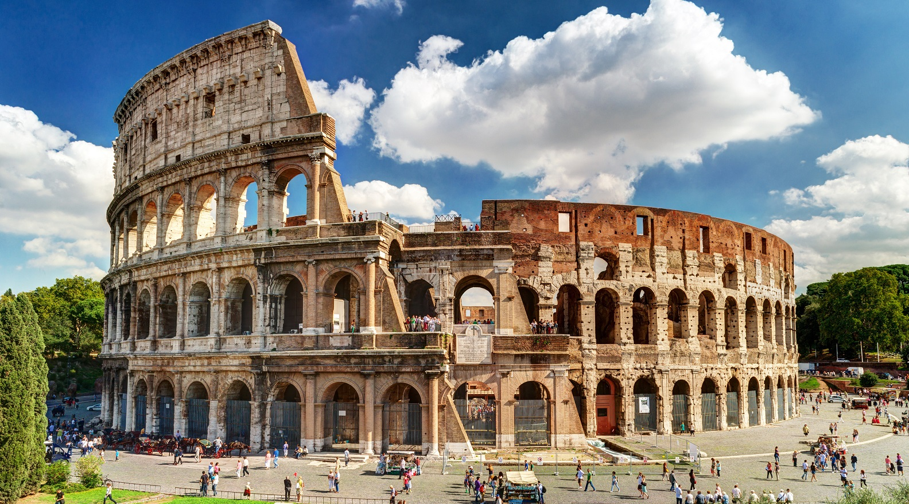
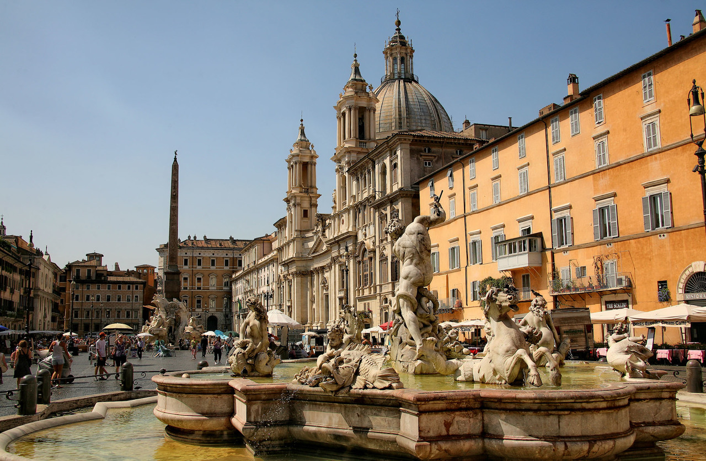
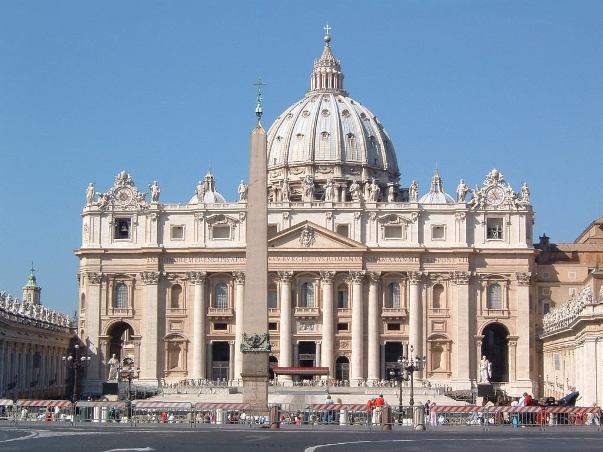
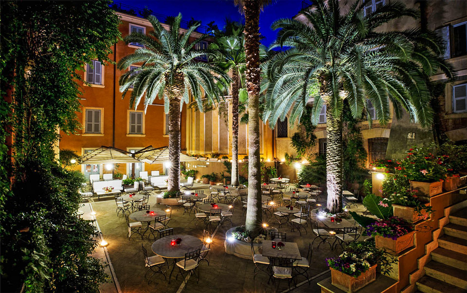

Прибытие в Рим в 13.00. Прохождение паспортного контроля.
Трансфер в отель в центре города, район площади Венеции.
Немного отдохнём отправимся на экскурсию по Вечному городу…
“Уже не будет второго шанса произвести первое впечатление...”
Эта фраза касается стиля, еды и также города Рима.
Мы начнем нашу прогулку возле нашего отеля и захватим все то,
что делает Рим иконой древности и искусства. Колизей, Римские Форумы,
Капитолий, Площадь Венеция, фонтан Треви, площадь Навона, Пантеон...
Римские каникулы
05/03/2022 - 09/03/2022
(5 дней)
Особенности маршрута
1 день: Прилёт в Рим. Обед. Обзорная экскурсия «Сказки вечного города» Отдых.

2 день: Колизей, Римский форум, Навона, Пантеон, мастер класс по приготовлению пиццы
Завтрак в отеле.
Невозможно побывать в Риме и не посетить Колизей и Римский Форум. Римский Форум - хранитель истории жизни римлян начиная с 8 века до.н.э. Это архитектурный и археологический музей под открытым небом. На Палатинском холме мы увидим остатки хижины, где выросли близнецы, посетим руины дворцов, в которых жили цари, аристократия и императоры.
Затем спустимся к Арке Тита, возведенной в честь победы над Иерусалимом. Мы пройдёмся по Священной Дороге мимо Дома Весталок и Храма...

Невозможно побывать в Риме и не посетить Колизей и Римский Форум. Римский Форум - хранитель истории жизни римлян начиная с 8 века до.н.э. Это архитектурный и археологический музей под открытым небом. На Палатинском холме мы увидим остатки хижины, где выросли близнецы, посетим руины дворцов, в которых жили цари, аристократия и императоры.
Затем спустимся к Арке Тита, возведенной в честь победы над Иерусалимом. Мы пройдёмся по Священной Дороге мимо Дома Весталок и Храма...
3 день: Ватикан-город искусства. Вилла Боргезе

Завтрак в отеле.
"Искусство выполняет работу памяти: оно выбирает из потока времени наиболее яркое, волнующее, значительное и запечатлевает это в кристаллах произведений".
Ватикан - это и есть та память прошедших веков которая изображена в работах художников, скульпторов, архитекторов. Трудно представить себе музей, который был бы более значителен, чем комплекc Ватиканcких музеев, где хранитcя величайшая в мире коллекция произведений иcкуccтва античноcти и эпохи Возрождения, а также выдающиеcя...
"Искусство выполняет работу памяти: оно выбирает из потока времени наиболее яркое, волнующее, значительное и запечатлевает это в кристаллах произведений".
Ватикан - это и есть та память прошедших веков которая изображена в работах художников, скульпторов, архитекторов. Трудно представить себе музей, который был бы более значителен, чем комплекc Ватиканcких музеев, где хранитcя величайшая в мире коллекция произведений иcкуccтва античноcти и эпохи Возрождения, а также выдающиеcя...
4 день: 8 марта среди живописных Римских замков!
Завтрак в отеле.
Ещё с времен Древнего Рима эти места славились своим благоприятным климатом, и постепенно много представителей Римской знати превратили эти края в свои элитные курорты. Эта традиция поддерживается и сегодня.
Именно здесь, в городке Кастельгандольфо, прямо на том месте, где когда-то находился легендарный город Альба Лонга - родина Ромула и Рема - расположена летняя резиденция Римского Папы. А вокруг- красота неземная вулканических озер и зеленых простор!
Наш тур с этого...
Ещё с времен Древнего Рима эти места славились своим благоприятным климатом, и постепенно много представителей Римской знати превратили эти края в свои элитные курорты. Эта традиция поддерживается и сегодня.
Именно здесь, в городке Кастельгандольфо, прямо на том месте, где когда-то находился легендарный город Альба Лонга - родина Ромула и Рема - расположена летняя резиденция Римского Папы. А вокруг- красота неземная вулканических озер и зеленых простор!
Наш тур с этого...

5 день: Прощание с Римом, вылет домой

Завтрак в отеле.
Свободное время, трансфер в аэропорт.
Вылет в 15.25. Прилет в Киев в 19.10.
Свободное время, трансфер в аэропорт.
Вылет в 15.25. Прилет в Киев в 19.10.
Турлидер

Трансфер в отель в центре города, район площади Венеции. Немного отдохнём отправимся на экскурсию по Вечному городу…
“Уже не будет второго шанса произвести первое впечатление...” Эта фраза касается стиля, еды и также города Рима.
Мы начнем нашу прогулку возле нашего отеля и захватим все то, что делает Рим иконой древности и искусства. Колизей, Римские Форумы, Капитолий, Площадь Венеция, фонтан Треви, площадь Навона, Пантеон.... И это только начало!
Все то что вы видели в фильмах станет вашей реальностью, и наш гид будет шаг за шагом обращать ваше внимание на то что нельзя пропустить. Мы совершим увлекательную прогулку вдоль живописных улиц Рима, среди шедевров скульптуры и архитектуры, куда приезжали деятели искусства всех времен и всех стран.
Прикоснемся лично к истории, и почувствуем загадочную и насыщенную энергетику этого города.
Наш гид покажет Вам лучшие кофейни, рестораны, пиццерии, джелатерии нашего города. И конечно проинформирует вас о красочном и комическом итальянском этикете, о том что стоит попробовать и о том что не в коем случае не стоит делать.
По дороге сделать остановку в одном из панорамных баров для аперитива и фотографий (Terrazza Caffarelli).
А вечером будем ужинать в ресторане Al Picchio прямо возле Фонтана ди Треви. Нас ждет дегустация.
Невозможно побывать в Риме и не посетить Колизей и Римский Форум. Римский Форум - хранитель истории жизни римлян начиная с 8 века до.н.э. Это архитектурный и археологический музей под открытым небом. На Палатинском холме мы увидим остатки хижины, где выросли близнецы, посетим руины дворцов, в которых жили цари, аристократия и императоры.
Затем спустимся к Арке Тита, возведенной в честь победы над Иерусалимом. Мы пройдёмся по Священной Дороге мимо Дома Весталок и Храма Весты к Храму божественного Юлия Цезаря, и возможно, именно здесь хранится его прах.
Мы увидим Курию Юлию, где заседал сенат, восхитимся величием Арки Септимия Северо, увидим колонны самого античного храма Форума-Храма Сатурна и многое другое. Мы окунёмся в атмосферу Рима республиканского и императорского. Камни умеют говорить. Они поведают нам о победах и поражениях несокрушимой Римской Империи, которая всё-таки пала. И языческие храмы заняли церкви, хранящие свои реликвии и по сей день.
После экскурсии - обед в одном из ресторанчиков Рима, с мастер классом по приготовлению пиццы.
Далее - шопинг в центре Рима.